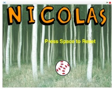
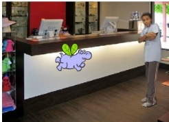
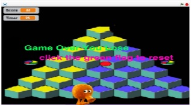

Name Assignment

Discription
This is where we created our name in scratch and then everything to do different movements. There had to be at least 4 different kinds of movements And you had to have something about you. The program needed to run when the green flag was clicked.
Concepts learned
- I learned how to make things move around and then do differnet actions.
- I learned how to create a clone of a sprite.
- I learned how to create loops and make thigns run on forver.
- I learned how to make it so when space was pressed everything would reset.
Computer Buying Project

Description
This is a presentation where a computer is chosen based on facts and what somebody wanted. You chose the computer that you thought was best for them. There were four different options. You had to make an animation or a presentation to deside.
- I learned how to make the backround switch at certain times.
- I learned how to make it so that when something was touched then antother thing would happen.
- I also learned how to make something switch at a certain time.
Final Project

Discription
This is a game I created where you want to catch a muffin with qbert and prevent it from getting by him. If you lose it will say you lose. After 30 seconds the second round starts.
- This is where I learned to create a timer. I also learned how to create a second round.